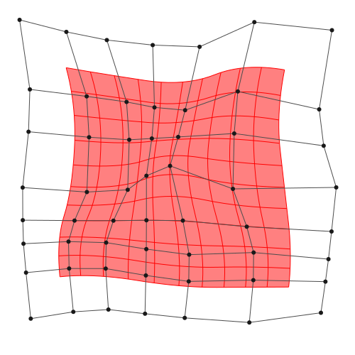

Mathematical properties of B-spline
Introduction
B-spline is a mathematical object, and it has a lot of application(e.g. NURBS, IGA).
In this page, we'll explain the mathematical definition and property of B-spline with Julia code.
Before running the following code, do not forget importing the package:
using BasicBSplineNotice
- A book "Geometric Modeling with Splines" by Elaine Cohen, Richard F. Riesenfeld, Gershon Elber is really recommended.
- But, some of notations in this page are my original, but these are well-considered results.
Knot vector
A finite sequence
is called knot vector if the sequence is broad monotonic increase, i.e. $k_{i} \le k_{i+1}$.
[fig]
k = Knots([1,2,3])
k = Knots(1:3)
k = Knots(1,2,3)We denotes a number of knots by sharp symbol like this:
k = Knots([4,5,6])
♯(k) # 3
length(k) # 3We introduce additional operator $+$ and product operator $\cdot$
For example, $(1,2,3)+(2,4,5)=(1,2,2,3,5)$, $2\cdot (2,3)=(2,2,3,3)$.
Knots([1,2,3]) + Knots([2,4,5]) # Knots([1,2,2,3,5])
2 * Knots([2,3]) # Knots([2,2,3,3])Deleting duplicates operator
For example, $\widehat{(1,2,2,3)}=(1,2,3)$.
unique(Knots([1,2,2,3])) # Knots([1,2,3])For Given knot vector $k$, the following function $\mathfrak{n}_k:\mathbb{R}\to\mathbb{Z}$ represents the counts of ..
For example, if $k=(1,2,2,3)$, then $\mathfrak{n}_k(0.3)=0$, $\mathfrak{n}_k(1)=1$, $\mathfrak{n}_k(2)=2$.
k = Knots([1,2,2,3])
𝔫(k,0.3) # 0
𝔫(k,1.0) # 1
𝔫(k,2.0) # 2B-spline space
Before defining B-spline space, we'll define polynomial space with degree $p$.
Polynomial space with degree $p$.
This space $\mathcal{P}[p]$ is a $p+1$-dimensional linear space.
Note that $\{t\mapsto t^i\}_{0 \le i \le p}$ is a basis of $\mathcal{P}[p]$, and also the set of Bernstein polynomial $\{B_{(i,p)}\}_i$ is a basis of $\mathcal{P}[p]$.
Where $\binom{p}{i-1}$ is a binomial coefficient.
For given polynomial degree $p\le 0$ and knot vector $k=(k_1,\dots,k_l)$, B-spline space $\mathcal{P}[p,k]$ is defined as follows:
Note that a element of the space $\mathcal{P}[p,k]$ is piecewise polynomial.
[fig]
p = 2
k = Knots([1,3,5,6,8,9])
BSplineSpace(p,k)A B-spline space is said to be proper if its degree and knots satisfies following property:
isproper(BSplineSpace(2,Knots([1,3,5,6,8,9]))) # true
isproper(BSplineSpace(1,Knots([1,3,3,3,8,9]))) # falseThe B-spline space is linear space, and if a B-spline space is proper, its dimension is calculated by:
dim(BSplineSpace(2,Knots([1,3,5,6,8,9]))) # 3B-spline basis function
B-spline basis function is defined by Cox–de Boor recursion formula.
If the denominator is ..
The set of functions $\{B_{(i,p,k)}\}_i$ is a basis of B-spline space $\mathcal{P}[p,k]$.
using Plots
gr()
p = 2
k = Knots(1:8)
P = BSplineSpace(p,k)
plot([t->bsplinebasis₊₀(i,P,t) for i in 1:dim(P)], 1, 8, ylims=(0,1.05))
You can choose the first terms in different ways.
Support of B-spline basis function
If a B-spline space$\mathcal{P}[p,k]$ is proper, the support of its basis function is calculated as follows:
[fig]
i = 2
k = Knots([5,12,13,13,14])
p = 2
P = BSplineSpace(p,k)
bsplinesupport(P) # [5..13, 12..14]
bsplinesupport(i,P) # 12..14Derivative of B-spline basis function
The derivative of B-spline basis function can be expressed as follows:
Note that $\dot{B}_{(i,p,k)}\in\mathcal{P}[p-1,k]$.
using Plots
gr()
p = 2
k = Knots(1:8)
P = BSplineSpace(p,k)
plot([t->bsplinebasis′₊₀(i,P,t) for i in 1:dim(P)], 1, 8, ylims=(0,1.05))
Partition of unity
using Plots
gr()
p = 2
k = Knots(1:8)
P = BSplineSpace(p,k)
plot(t->sum(bsplinebasis₊₀(i,P,t) for i in 1:dim(P)), 1, 8, ylims=(0,1.05))
To satisfy the partition of unity on whole interval $[1,8]$, sometimes more knots will be inserted to the endpoints of the interval.
using Plots
gr()
p = 2
k = Knots(1:8) + p * Knots([1,8])
P = BSplineSpace(p,k)
plot(t->sum(bsplinebasis₊₀(i,P,t) for i in 1:dim(P)), 1, 8, ylims=(0,1.05))
But, the sum $\sum_{i} B_{(i,p,k)}(t)$ is not equal to $1$ if $t=8$. Therefore, to satisfy partition of unity on closed interval $[k_{p+1}, k_{l-p}]$, the definition of first terms of B-spline basis functions are sometimes replaced:
using Plots
gr()
p = 2
k = Knots(1:8) + p * Knots([1,8])
P = BSplineSpace(p,k)
plot(t->sum(bsplinebasis(i,P,t) for i in 1:dim(P)), 1, 8, ylims=(0,1.05))
Inclusion relation between B-spline spaces
For proper B-spline spaces, the following relationship holds.
(as linear subspace..)
P1 = BSplineSpace(1,Knots([1,3,5,8]))
P2 = BSplineSpace(1,Knots([1,3,5,6,8,9]))
P3 = BSplineSpace(2,Knots([1,1,3,3,5,5,8,8]))
P1 ⊆ P2 # true
P1 ⊆ P3 # true
P2 ⊆ P3 # false
P2 ⊈ P3 # trueHere are plots of the B-spline basis functions of the spaces P1, P2, P3.
using Plots
gr()
P1 = BSplineSpace(1,Knots([1,3,5,8]))
P2 = BSplineSpace(1,Knots([1,3,5,6,8,9]))
P3 = BSplineSpace(2,Knots([1,1,3,3,5,5,8,8]))
plot(
plot([t->bsplinebasis₊₀(i,P1,t) for i in 1:dim(P1)], 1, 9, ylims=(0,1.05), legend=false),
plot([t->bsplinebasis₊₀(i,P2,t) for i in 1:dim(P2)], 1, 9, ylims=(0,1.05), legend=false),
plot([t->bsplinebasis₊₀(i,P3,t) for i in 1:dim(P3)], 1, 9, ylims=(0,1.05), legend=false),
layout=(3,1),
link=:x
)
This means, there exists a $n \times n'$ matrix $A$ which holds:
You can calculate the change of basis matrix $A$ with changebasis.
A12 = changebasis(P1,P2)
A13 = changebasis(P1,P3)using Plots
gr()
plot(
plot([t->bsplinebasis₊₀(i,P1,t) for i in 1:dim(P1)], 1, 9, ylims=(0,1.05), legend=false),
plot([t->sum(A12[i,j]*bsplinebasis₊₀(j,P2,t) for j in 1:dim(P2)) for i in 1:dim(P1)], 1, 9, ylims=(0,1.05), legend=false),
plot([t->sum(A13[i,j]*bsplinebasis₊₀(j,P3,t) for j in 1:dim(P3)) for i in 1:dim(P1)], 1, 9, ylims=(0,1.05), legend=false),
layout=(3,1),
link=:x
)
Multi-dimensional B-spline
tensor product
B-spline manifold
B-spline manifold is a parametric representation of a shape.
For given $d$-dimensional B-spline basis functions $B_{i^1,\dots,i^d}$ and given points $\bm{a}_{i^1,\dots,i^d} \in \mathbb{R}^\hat{d}$, B-spline manifold is defined by following equality:
Where $\bm{a}_{i^1,\dots,i^d}$ are called control points.
We will also write $\bm{p}(t^1,\dots,t^d; \bm{a})$, $\bm{p}(t^1,\dots,t^d)$, $\bm{p}(t; \bm{a})$ or $\bm{p}(t)$ for simplicity.
P1 = BSplineSpace(1,Knots([0,0,1,1]))
P2 = BSplineSpace(1,Knots([1,1,2,3,3]))
n1 = dim(P1) # 2
n2 = dim(P2) # 3
a = [[i, j] for i in 1:n1, j in 1:n2] # n1 × n2 array of d̂ array.
M = BSplineManifold([P1, P2], a)B-spline curve
B-spline surface
p = 2 # degree of polynomial
k = Knots(1:8) # knot vector
P = BSplineSpace(p,k) # B-spline space
rand_a = [rand(2) for i in 1:dim(P), j in 1:dim(P)]
a = [[2*i-6.5,2*j-6.5] for i in 1:dim(P), j in 1:dim(P)] + rand_a # random generated control points
M = BSplineManifold([P,P],a) # Define B-spline manifold
save_png("2dim.png", M) # save image
Affine commutativity
If $T$ is a affine transform $\mathbb{R}^d\to\mathbb{R}^d$, then the following equality holds.
Refinement
k₊=[Knots(3.3,4.2),Knots(3.8,3.2,5.3)] # additional knots
M′ = refinement(M,k₊=k₊) # refinement of B-spline manifold
save_png("2dim_refinement.png", M′) # save image
Note that this shape and the last shape are identical.
h-refinemnet
Insert additional knots to knot vector.
p-refinemnet
Increase the polynomial degree of B-spline manifold.
Fitting
Least squares method.
Try on Desmos graphing graphing calculator!
p1 = 2
p2 = 2
k1 = Knots(-10:10)+p1*Knots(-10,10)
k2 = Knots(-10:10)+p2*Knots(-10,10)
P1 = FastBSplineSpace(p1, k1)
P2 = FastBSplineSpace(p2, k2)
f(u) = [2u[1]+sin(u[1])+cos(u[2])+u[2]/2, 3u[2]+sin(u[2])+sin(u[1])/2+u[1]^2/6]/5
a = fittingcontrolpoints(f, [P1,P2])
M = BSplineManifold([P1,P2],a)
save_png("fitting.png", M, unitlength=50, up=10, down=-10, left=-10, right=10)